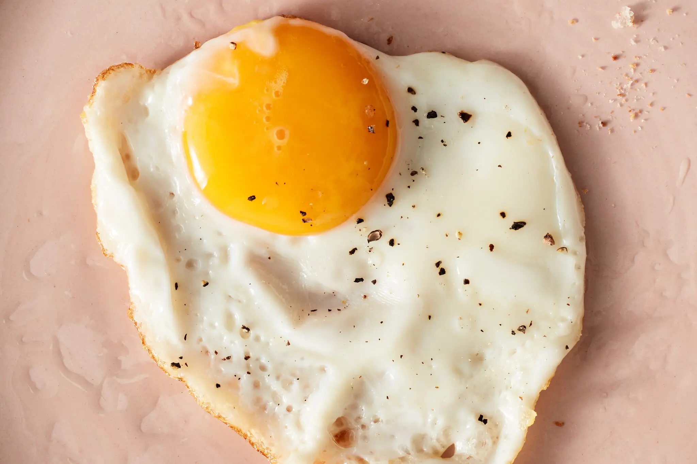

Eggs Recipe

Description
These eggs are an old recipe past down to me from my Mexican Grandmother.
Ingrediants
Steps
- Crack eggs
- Break apart and mix in bowl
- Heat pan
- Add oil to pan
- When the pan is hot enough, add eggs
- Move around while cooking until they're nice and fluffy